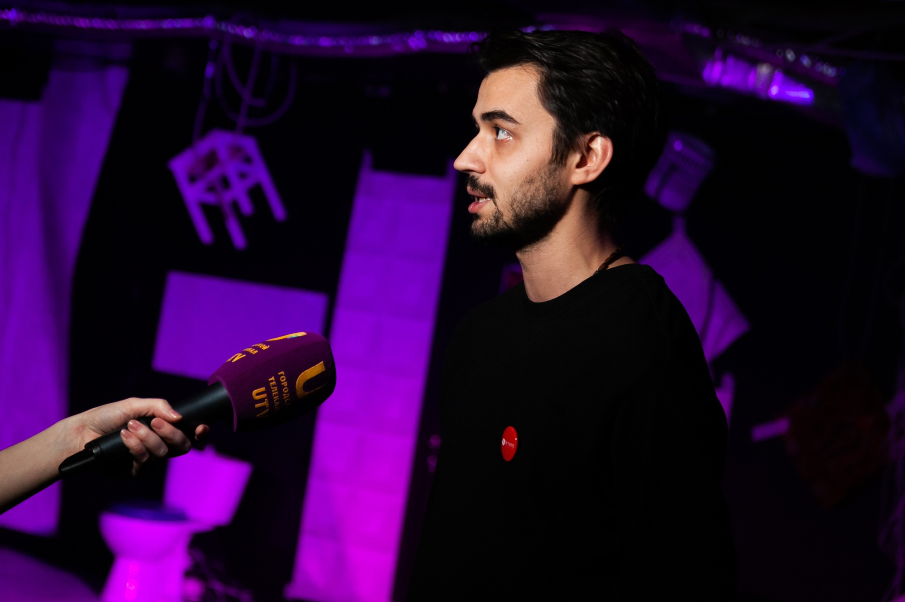

О нашем театре
История
Проект «The ТЕАТР» был создан 13 сентября 2013 года группой выпускников театрального факультета Уфимской Государственной академии искусств. Проект "The ТЕАТР" – это спектакли молодых диких режиссеров. Проект «The ТЕАТР» - это современная драма, проза, поэзия, танец, язык, звук. Проект «The ТЕАТР» - говорит со зрителем на сегодняшние, пусть и не всегда безоблачные темы. На данный момент в театре имеется действующая школа обучения актерскому мастерству для взрослых и самых маленьких.
Часто задаваемые вопросы
- Есть ли в вашем театре дресс код? Приходите в той одежде в которой вам комфортно и удобно!
- Можно ли приходить к вам со своим алкоголем? Нет, так как распитие зрителями спиртных напитков, может негативно сказаться на шаткой психике наших актеров. За последствия ручаться не можем.
- Есть ли у вас актёрская школа? Да, мы провозим обучение актёрскому мастерству. Подробнее о занятиях и ближайшем наборе вы можете узнать по данной ссылке
- Можно ли приходить на спектакли детям? Практически все наши спектакли имеют возрастное ограничение 18+ Но в сопровождение и при согласии взрослых на некоторые спектакли мы пустить можем. Но не расстраивайтесь, для детей спектакли мы тоже играем!
- Матерятся ли в вашем театре? В нашем театре может происходить все. Волшебство, чудо, страсти, любовь, эмоции! Нецензурная лексика, кстати, да, тоже присутствует, в крайне необходимых случаях.
- Можно ли снимать отрывки спектаклей на телефон? Нужно! Мы очень любим когда вы делитесь вашими впечатлениями и отмечаете нас в своих соц сетях, рассказываете о нас своим друзьям, знакомым и близким!
- Что такое «частный» театр? Это значит что мы существуем сами. Без государственной и какой либо другой спонсорской поддержки. Мы существуем отдельно. Свободно, Честно, открыто.
- Чем вы отличаетесь от других театров? Не побоимся этого слова, но всем. Начиная от парадного входа, заканчивая самими спектаклями. Приходите и увидите, ощутите все сами!
Как нас найти?
Мы находимся по адресу: г. Уфа, ул. Карла Маркса 48/1